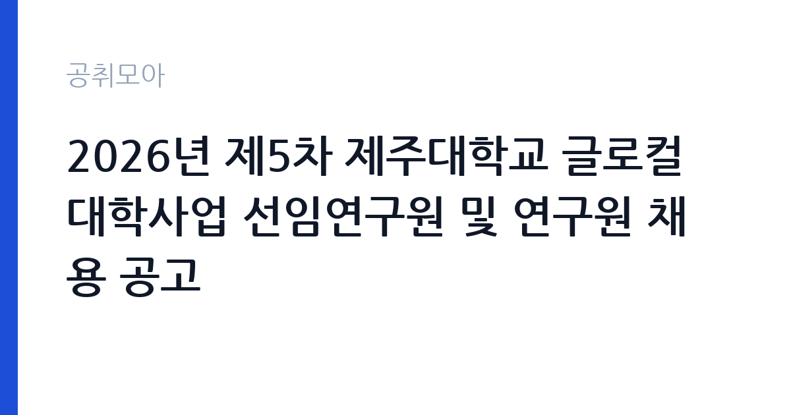

[국가기관] 2026년 제5차 제주대학교 글로컬대학사업 선임연구원 및 연구원 채용 공고
제주대학교 · 제주 · 마감 2026-10-02 (D-8) · 출처 나라일터

한눈에 보는 모집 조건
| 기관 | 제주대학교 |
|---|---|
| 공고명 | 2026년 제5차 제주대학교 글로컬대학사업 선임연구원 및 연구원 채용 공고 |
| 고용형태 | 정규직 |
| 근무지 | 제주 |
| 게시일 | 2026-09-24 |
| 마감일 | 2026-10-02 (D-8) |
지원자격, 이렇게 읽으세요
- 선임연구원 2명 연구원 4명
- 접수 ~2026-10-02 마감
- 세부 조건은 원문 공고문 확인
모집 인원은 선임연구원 2명과 연구원 4명으로 나뉘어 있습니다. 선임연구원과 연구원은 요구하는 학위와 경력 연수가 다르므로 본인이 어느 쪽에 해당하는지 원문 공고문의 응시자격표에서 먼저 가려내시기 바랍니다. 대학 사업단 연구원 채용에서는 관련 분야 석사 이상 학위나 실무 경력을 요구하는 경우가 많습니다. 이메일 접수라서 제출 서류의 파일 형식과 파일명 규칙을 지키는 것이 중요합니다. 누락된 서류가 있으면 접수 자체가 무효가 될 수 있으니 공고문의 제출서류 목록을 체크리스트 삼아 하나씩 확인하시기 바랍니다. 문의처는 제주대학교 글로컬대학사업단이며 전화번호는 064-754-4950과 4955입니다.
이 공고의 포인트
이 공고의 매력은 세 가지입니다. 첫째, 한 번에 6명을 뽑는 규모 있는 채용이라 문이 넓습니다. 선임과 일반으로 트랙이 나뉘어 있어 경력별로 지원처를 고를 수 있습니다. 둘째, 글로컬대학사업이라는 대형 국책사업의 실무를 경험할 수 있다는 점입니다. 대학 혁신, 지역 연계, 성과관리 업무는 이후 교육 관련 공공기관이나 대학 행정직으로 이직할 때 경력으로 살릴 수 있습니다. 셋째, 근무지가 제주라는 점입니다. 제주 거주자나 제주 정착을 희망하는 연구자에게는 모처럼의 연구직 기회입니다. 접수 마감이 10월 2일로 촉박하므로 서둘러 준비하시기 바랍니다.
전형은 어떻게 진행되나
전형은 서류심사와 면접으로 진행되는 것이 일반적입니다. 대학 사업단 채용에서는 서류에서 학위와 경력의 관련성을 보고, 면접에서 사업 이해도와 실무 역량을 평가합니다. 이메일 접수는 마감일 18시 이전 도착분이 유효한 경우가 많으니 마감 당일 접수는 피하시기 바랍니다. 제출 후에는 접수 확인 메일이나 전화를 받아 접수가 정상 처리됐는지 확인하시기 바랍니다. 면접에서는 글로컬대학사업의 취지와 제주대학교 실행계획을 묻는 경우가 많으므로 사업단 홈페이지와 보도자료를 미리 읽어두시기 바랍니다.
원문에서 확인한 전형 방식
2026년 제5차 제주대학교 글로컬대학사업 선임연구원 및 연구원을 아래와 같이 공개 모집하오니 역량있는 인재분들의 많은 지원 바랍니다. 1. 채용인원: 선임연구원 2명, 연구원 4명 2. 원서접수 기간: 2026. 9. 23.(수) ~ 10. 2.(금) 3. 원서접수 방법: 응시자 제출서류를 E-mail로 제출(jejunu_glc@jejunu.ac.kr) 4. 문의처: 제주대학교 글로컬대학사업단 ☎ 064-754-4950, 4955 - 제출서류 등 자세한 내용은 공고문(첨부파일)을 참고하시기 바랍니다.
이런 분께 추천해요
- 고등교육 정책이나 대학 행정, 지역혁신 분야 실무 경력을 쌓고 싶은 분께 추천합니다.
- 석사 이상 학위를 보유하고 제주에서 연구직으로 일하고 싶은 분께 잘 맞습니다.
- 대형 국책사업단 경험을 발판 삼아 공공기관이나 대학으로 진출하려는 분께 좋은 기회입니다.
지원 전 체크리스트
- 선임연구원과 연구원 중 본인의 학위와 경력에 맞는 트랙을 골랐습니다.
- 이메일 접수 주소와 마감 시각을 확인하고 제출 서류 목록을 전부 챙겼습니다.
- 첨부 파일의 형식과 파일명 규칙을 공고문 요구대로 맞췄습니다.
- 접수 후 확인 연락을 받아 서류가 정상 접수됐는지 검증했습니다.
모집 일정과 제출 타이밍
원서 접수는 2026년 9월 23일부터 10월 2일까지입니다. 이메일 접수라 마감일 서버 지연이나 오발송 위험이 있으니 최소 하루 전에는 발송을 마치시기 바랍니다. 서류 합격자 발표와 면접 일정은 사업단 사정에 따라 정해지며, 공고문의 문의처를 통해 안내받을 수 있습니다. 면접 준비 기간이 짧을 수 있으니 접수와 동시에 글로컬대학사업 자료를 읽어두시면 유리합니다. 최종 합격 후 근무 시작 시기는 사업단 일정에 따르므로 합격 안내를 꼼꼼히 확인하시기 바랍니다.
직무 이해하기: 국가기관
글로컬대학사업단 연구원은 대학 혁신 실행계획의 수립과 집행, 성과지표 관리, 지역 연계 프로그램 운영을 실무에서 담당합니다. 선임연구원은 과제 기획과 보고서 작성 같은 주도적인 역할을, 연구원은 자료 조사와 행정 실무, 회의 운영 지원을 맡는 구조가 일반적입니다. 사업비가 정해진 기간 동안 투입되는 한시 사업의 성격이 있으므로 계약 기간과 연장 조건을 원문에서 반드시 확인하시기 바랍니다. 대학과 지자체, 지역 산업체가 얽힌 협업 업무가 많아 조정 능력과 문서 작성 능력이 중요합니다.
자기소개서 작성 팁
사업단 연구원 지원 서류의 핵심은 사업 이해도와 실무 경험의 연결입니다. 글로컬대학사업이 무엇인지, 제주대학교가 어떤 실행계획을 내세웠는지를 본인 언어로 정리해 보여주시기 바랍니다. 과거에 맡았던 과제나 프로젝트 경험을 성과 중심으로 쓰되, 사업단 업무와 겹치는 부분을 부각하시기 바랍니다. 이메일 접수라 자기소개서 파일의 가독성도 평가 요소가 됩니다. 분량을 지키고 오탈자를 없애는 기본기가 좋은 인상을 줍니다.
면접 준비 포인트
면접에서는 사업에 대한 이해와 실무 투입 가능성을 중점적으로 봅니다. 제주대학교 글로컬대학 실행계획의 핵심 과제를 두세 개 정도 숙지해 가시기 바랍니다. 지역 연계나 성과관리 같은 키워드가 나오면 본인 경험과 엮어 답변하시기 바랍니다. 사업단 일은 야근과 출장, 촉박한 마감이 잦은 편이므로 업무 강도에 대한 각오를 묻는다면 솔직하면서도 긍정적으로 답하시기 바랍니다. 제주 근무 가능 여부와 정착 계획도 단골 질문이니 미리 정리해 두시기 바랍니다.
급여·근무조건 읽는 법
이번 공고문 요약에는 보수 조건이 별도로 적시되어 있지 않아 정확한 연봉액은 원문 공고문 붙임 파일에서 확인하셔야 합니다. 대학 사업단 연구원의 보수는 사업비 인건비 기준에 따라 책정되는 경우가 많으며, 학위와 경력에 따라 차등을 두는 구조가 일반적입니다. 원문에서 확인하실 항목은 월 보수액과 4대 보험, 퇴직금, 계약 기간과 연장 조건입니다. 제주대학교는 알리오 경영공시 대상 기관이므로 공시된 직원 평균보수를 참고하실 수 있지만, 사업단 계약직 보수는 정규직 평균과 다를 수 있어 원문 확인이 우선입니다. 경쟁률과 합격선은 공개되지 않았습니다.
자주 묻는 질문
- 선임연구원과 연구원의 차이가 무엇입니까?
요구하는 학위와 경력 수준, 맡는 업무의 책임 범위가 다릅니다. 선임은 과제 기획과 주도적인 역할을, 연구원은 실무 지원을 맡는 경우가 많습니다. 정확한 자격과 직무는 원문 공고문의 직무기술서에서 확인하시기 바랍니다. - 이메일 접수 때 주의할 점이 있습니까?
마감 시각 이전 도착분이 유효한지, 파일 형식과 파일명 규칙이 정해져 있는지 확인하시기 바랍니다. 발송 후에는 접수 확인 연락을 받아 누락 없이 접수됐는지 검증하시기 바랍니다. - 계약직입니까?
사업단 연구원은 사업 기간에 맞춘 계약 형태로 채용되는 경우가 많습니다. 계약 기간과 연장 가능 여부는 원문 공고문에서 확인하시기 바랍니다.
함께 보면 좋은 공고
[국가기관] 2026년 한국교원대학교 국립대학 육성사업 전담직원(상담심리센터) 채용 공고 — 마감 2026-10-08[국가기관] 과학기술정보통신부 전문임기제 다급(과학기술 인력양성) 경력경쟁채용시험 재공고 취소 공고 — 마감 2026-10-02[국가기관] 대구교육대학교 국가공무원(사서서기보) 경력경쟁채용 공고 — 마감 2026-10-09출처: 나라일터 공개정보를 바탕으로 공취모아가 정리한 안내글입니다. 모집 조건·일정은 변경될 수 있으니 지원 전 반드시 원문 공고문을 확인하세요. 본 글은 정보 제공용이며 합격을 보장하지 않습니다.